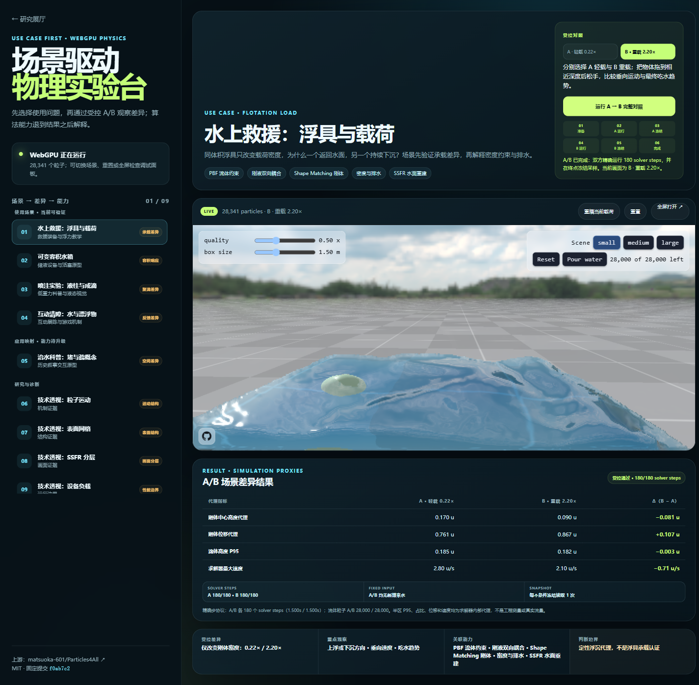
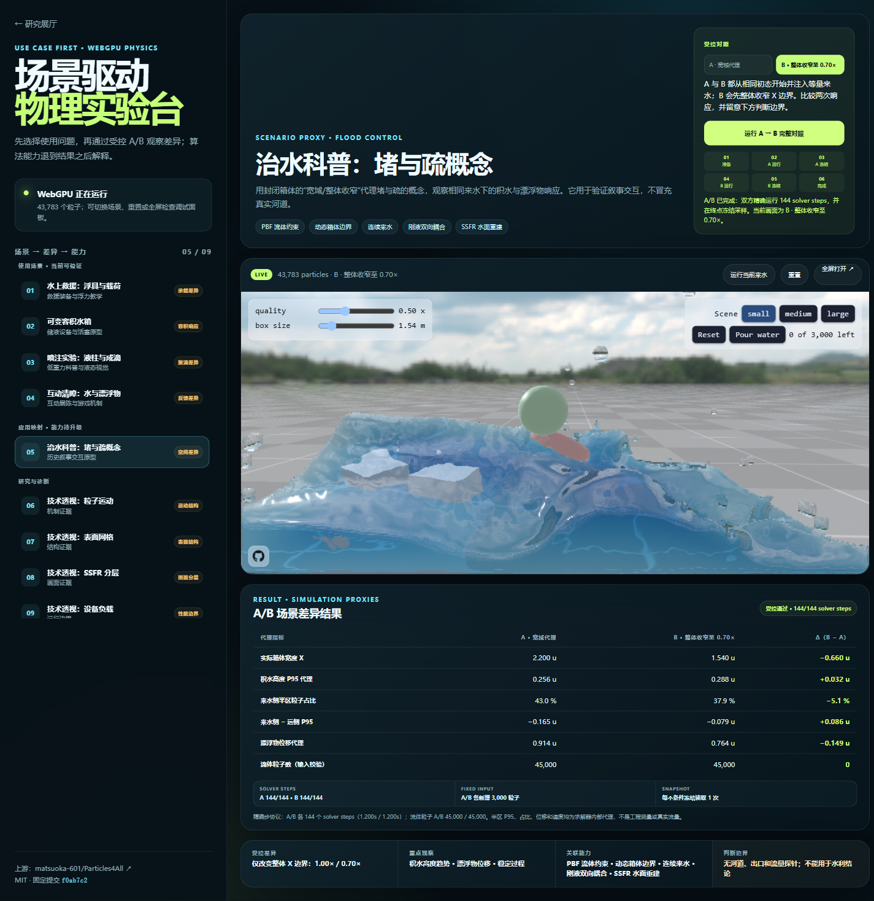
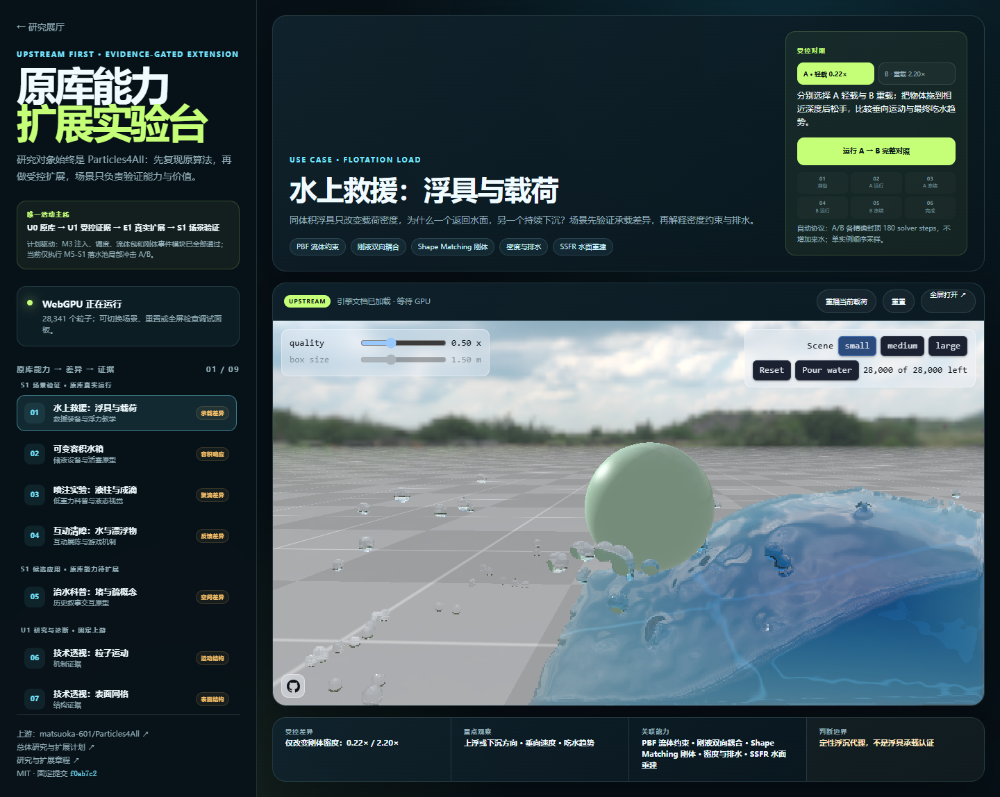
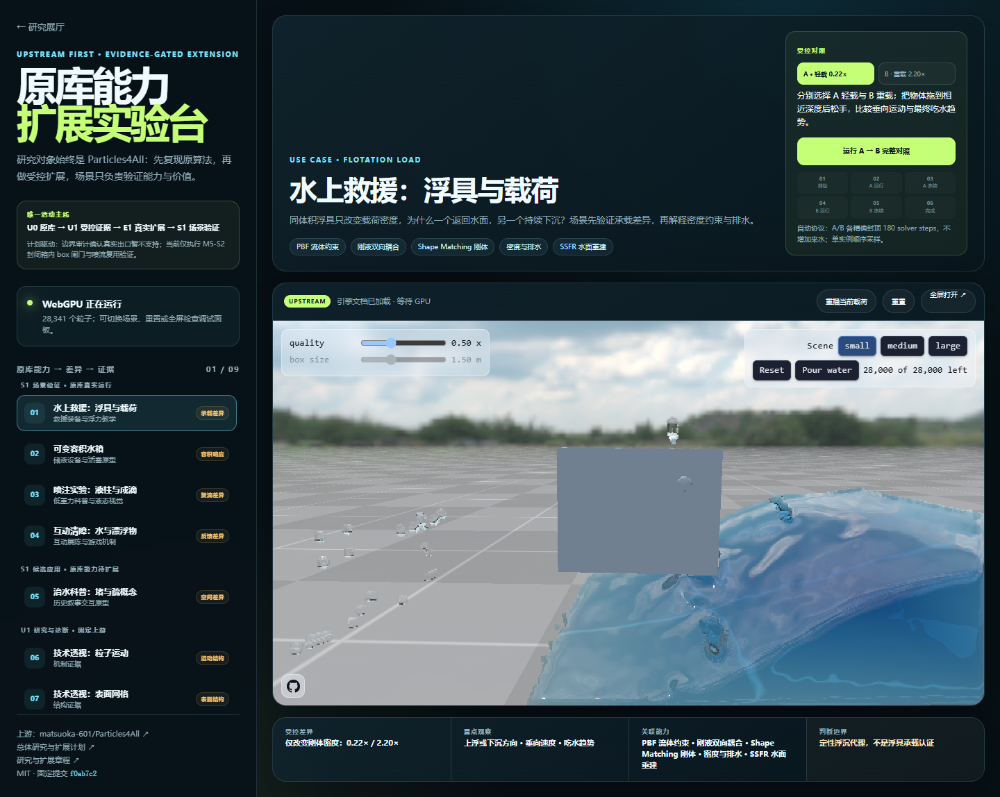
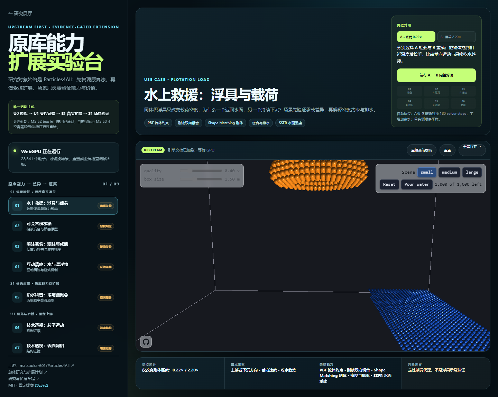

统一粒子物理
水和刚体都表示为粒子，在同一空间网格与约束循环中求解。
PBF · Shape MatchingUPSTREAM FIRST · EVIDENCE-GATED EXTENSION
阶段研究已于 2026-08-25 归档。本页保留源库 Runtime、受控实验、扩展证据与停止边界；后续只由明确使用场景重新启动。
研究目标不是重新做水，而是理解 Particles4All 已实现的液体—刚体算法、渲染和交互能力；基于真实能力做受控实验，再判断可以扩展到哪些场景。
01 · SOURCE CAPABILITY MAP
以下能力来自上游 README 和未修改 Runtime；场景名称不是源库能力。
水和刚体都表示为粒子，在同一空间网格与约束循环中求解。
PBF · Shape Matching水能推动物体，物体会排开和扰动水；浮力由统一求解自然产生。
浮沉 · 排水 · 碰撞将离散粒子邻域重建为更平滑的液体轮廓，而不是直接显示球形粒子。
Anisotropic Kernels利用深度、厚度、法线和窄域滤波构成 SSFR 连续水面。
Narrow-range Filter支持液柱断裂、液滴聚合和不同材料观感的定性实验。
Tension · Adhesion推水、注水、抓取刚体、移动箱壁，以及 small / medium / large 粒子规模。
WebGPU Compute02 · CONTROLLED EXPLORATION
不靠描述猜测，而是只改变一个条件，观察原库真实求解结果。

只改变：刚体密度 0.22× / 2.20×
观察：上浮、下沉、刚体位移和吃水趋势。
关联能力：PBF、Shape Matching、密度与排水、SSFR。
进入这个实验 →
03 · EXTENSION ROUTES
扩展分为“场景输入可实现”和“必须新增求解器”，不能混为一谈。

使用 Adapter 注入粒子并读取刚体响应，证明原库可被包装为局部效果模块。

验证持续来水、障碍与水体响应；这是场景边界扩展，不是新液体算法。

现有箱体边界不足以可靠支持复杂中空容器，已明确停止独立造引擎。
ARCHIVED · 2026-08-25
最适合有限容器注水、喷流、局部冲击、浮沉和障碍互动。宏观河海只可把它作为近场模块；当前不包装成通用水体 SDK，也不把流域或工程水力学算作源库能力。
打开完整源库能力实验台 →